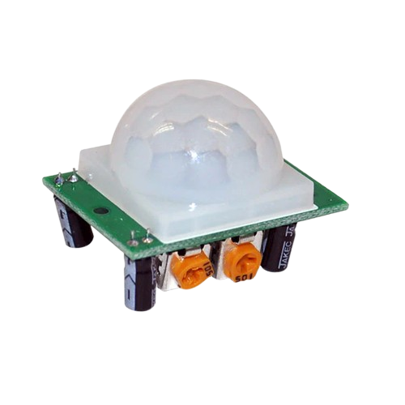

Soluciones IoT del proyecto
Sensores y Cámaras Integrados: Implementación y entrega de sensores de movimiento y cámaras de alta calidad seleccionados para el sistema de seguridad.
Circuito Eficiente: Desarrollo y entrega de un circuito eficiente que permita la integración sin conflictos de los sensores y cámaras.
Sistema de Alarmas: Integración y entrega de un sistema de alarmas que se active en tiempo real ante detecciones de movimientos no identificados.
Respuesta Rápida: Mecanismos implementados para permitir la respuesta rápida y eficiente, incluyendo la intervención humana en situaciones críticas.
Desarrollo del Sistema de Sensores y Cámaras
Diseñar y desarrollar un circuito que permita la integración eficiente de los sensores de movimiento y cámaras en un sistema de seguridad.
Investigar y seleccionar sensores de movimiento, cámaras de buena calidad y tecnología para su implementación en el proyecto.
Implementar algoritmos de procesamiento de imágenes para la detección precisa de eventos de seguridad, minimizando falsos positivos y optimizando el rendimiento del sistema.
Diseño y desarrollo de Sistemas de Alarmas
Integrar un sistema de alarmas que se active en tiempo real ante la detección de movimientos no identificados o comportamientos sospechosos.
Configurar opciones de notificación, como mensajes de texto, correos electrónicos o notificaciones push, para informar a los usuarios relevantes sobre eventos de seguridad.
Implementar un mecanismo de respuesta rápida y eficiente para permitir la verificación y, si es necesario la intervención humana en situaciones críticas.
Hardware
Cámara
Incorpora una cámara eficiente, una ESP32-CAM-MB modelo AI THINKER.
Hardware
Sensor de Movimiento
Incorpora sensor de movimiento PIR (infrarrojos pasivos) para detectar movimientos.
Software
Arduino IDE

Escribe, compila y carga fácilmente código en el microcontrolador para controlar su funcionalidad, incluyendo la captura y transmisión de imágenes a través de la cámara integrada.
Plataforma
Firebase

Firebase Realtime Database: Base de datos en tiempo real para sincronización de datos en tiempo real entre los usuarios y el dispositivo.
Firebase Cloud Storage: Almacenamiento escalable en la nube para el contenido multimedia.